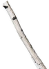
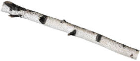

<section class="main-item proftruppa-section">
  <div class="container relative">
    <div class="title title-1 section__title proftruppa__title">
      <div>
        <span>Профтруппа</span>
      </div>
    </div>

    <div class="align__container-right">
      <div class="proftruppa__wrapper">
        <div class="proftruppa-content proftruppa-content-1">
          <p>
            Ещё есть Стася, и&nbsp;она артистка профессиональной труппы. Она
            не&nbsp;получала двоек за&nbsp;поведение, и&nbsp;не&nbsp;была
            &laquo;трудным подростком&raquo;. Поэтому Стася даже думала разбить
            окно в&nbsp;школе или начать курить, чтобы был повод предъявить
            в&nbsp;цирке свое непримерное поведение. Но&nbsp;ее&nbsp;страсть
            к&nbsp;цирку была настолько сильной, что стала достаточным
            аргументом для команды, чтобы принять подростка в&nbsp;проект.
          </p>
        </div>

        <div class="proftruppa-content proftruppa-content-2">
          <p>
            Стася выросла и&nbsp;из&nbsp;хулиганского проекта и&nbsp;перешла
            в&nbsp;профессиональную труппу. Там она занимается вместе
            с&nbsp;другими выпускниками Упсала-Цирка, а&nbsp;также молодыми
            артистами из&nbsp;других цирков и&nbsp;театров. Это ребята, которым
            интересно работать в&nbsp;жанре нового цирка и&nbsp;развивать это
            направление в&nbsp;России.
            <br /><br />
            Проект появился пару лет назад, мы&nbsp;только в&nbsp;начале пути.
            Мы&nbsp;хотим найти свой характер, хотя это и&nbsp;очень сложно. Кто
            мы? Откуда наши корни? Какова наша энергия? Какова наша эстетика?
            Пока мы&nbsp;в&nbsp;поиске, вы&nbsp;можете посмотреть последний
            спектакль профтруппы &laquo;Перья&raquo;, чтобы понять, о&nbsp;чём
            идёт речь, куда мы&nbsp;идём.
          </p>
        </div>
      </div>
    </div>

    <div class="cirkcler__wrapper">
      
    </div>

    <div class="kacheli__wrapper">
      <div class="kacheli__inner">
        
        
        
        
        
      </div>
    </div>

    <div class="cloud__wrapper cloud__wrapper-1">
      
    </div>
    <div class="cloud__wrapper cloud__wrapper-2">
      
    </div>
    <div class="cloud__wrapper cloud__wrapper-3">
      
    </div>
</section>
